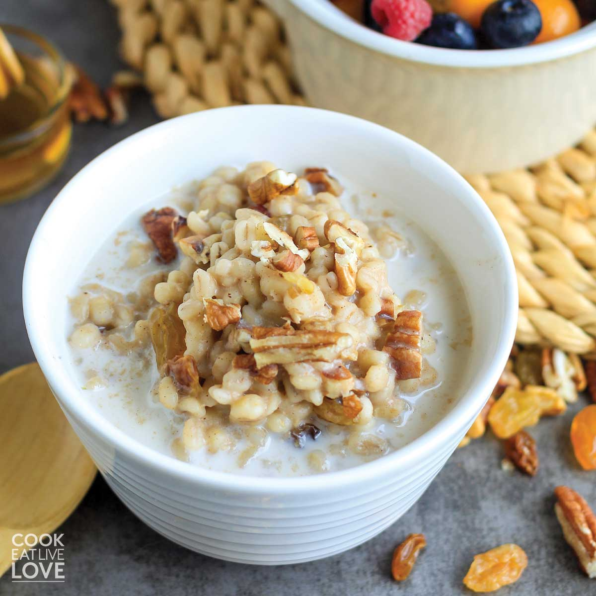

Barley Porridge

- 1 cup pearl barley
- 4 cups water
- 1 pinch salt
- 2 tablespoons butter
- 1/2 cup cream
- 1/4 cup honey
- In a large saucepan, combine the pearl barley, water, and salt. Bring to a boil, then reduce the heat and simmer for 45-60 minutes.
- Stir in the butter and cream, and continue to cook for 5-10 minutes, or until the porridge reaches your desired consistency.
- Serve hot with honey.